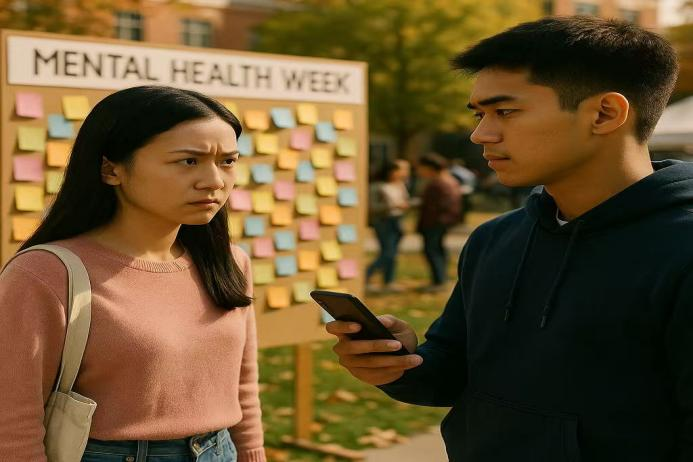

Jack was shooting in front of the wall but was refused by Rose. He experienced for the first time the
frustration of being unable to control the emotional rhythm of others. He lowered his head and looked at the
unreleased video in his hand, lost in a choice.